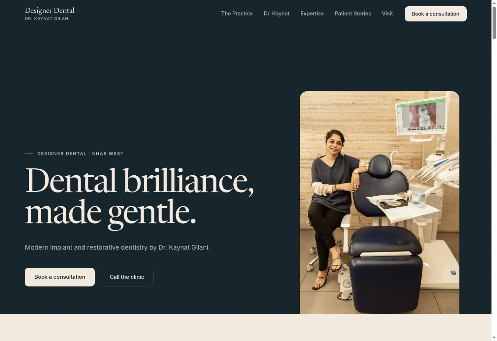

AGENTS.
Things that
do things.
Small systems built around
actual problems.
Built with code, language models
and human judgement.
Prototype
Website Recovery Agent
Finds what is weak in a local-business website, then builds a better version.
Audit Position Rebuild


One of five clinic website directions.
Website direction, not a before-and-after claim.
Prototype
Google Reputation Engine
Turns public review data into a clear reputation gap and action plan.
Compare Diagnose Prioritise

Same rating. A different review base.
An archived public-data snapshot. Figures are not a live feed or a claim of results delivered.
Prototype
Missed Enquiry Recovery
Finds patient enquiries that went quiet before they became appointments.
Track Follow up Recover
Try Today, Follow-ups or Report.
Fictional sample data. Changes reset on reload. No medical records. Nothing is sent.
Work sample
BCCL Brand Voice Agent
Drafts inside a locked brand voice, then lets a human choose, reject and redirect.
Voice lock Options Feedback Revise

AI drafts. Humans keep taste.
Work sample. Not affiliated with BCCL / Times of India. Public voice constraints, not an internal brand book.
Work sample
Content Supply Chain Console
One brief, multiple formats, human gates, localisation and approval.
Brief Generate Choose Localise Approve

One master. Two market voices. A human gate.
Work sample / speculative demo. Not affiliated with Accenture and not an Accenture commission.
Still making.
I’m a creative director who started building small systems around problems I kept noticing.
Some are internal tools. Some are prototypes.
All started with a real use case.